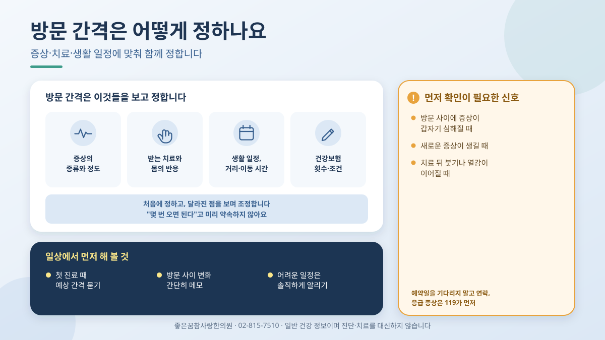

이종호 한의사 감수좋은꿈참사랑한의원 대표원장 (한의사 면허번호 19769)발행 2026-11-23 · 수정 2026-11-26
이 글의 차례
- 왜 간격이 사람마다 다를까요
- 자주 하는 오해
- 예를 들면 이런 경우입니다
- 먼저 이렇게 여쭙니다
- 일상에서 먼저 해 볼 수 있는 것
- 한의원에서 함께 살필 수 있는 경우
- 스스로 점검해 보세요
- 얼마나 지켜보고, 언제 연락하면 좋을까요
- 이렇게 기록해 오시면 상담이 쉬워집니다
- 처음 몇 번의 방문에서는 무엇을 보나요?
- 왜 간격을 넓히는 시점이 중요할까요?
- 불편의 종류에 따라 이렇게 달라질 수 있습니다
- 방문 사이에 하는 일도 간격만큼 중요합니다
- 간격을 넓힌 뒤에는 어떻게 마무리하나요?
- 일정이 빠듯한 분은 이렇게 말씀해 주세요
- 왜 처음에는 가까운 간격을 이야기하기도 할까요?
- 간격이 벌어진 뒤 다시 오실 때
- 다른 치료와 함께 받고 있다면
- 다음 방문 날은 이렇게 정해 두세요
- 아이나 어르신이라면 보호자 일정도 함께 봅니다
- 계절과 생활이 바뀌면 간격도 달라질 수 있습니다
- 왜 오늘의 몸 상태로 다음 간격을 정할까요?
- 한 번 방문으로 상담만 받고 싶다면
- 간격을 정할 때 궁금한 점은 이렇게 물어보세요
- 이런 증상은 먼저 확인이 필요합니다
- 함께 읽으면 좋은 글
한의원 방문 간격은 증상의 종류와 정도, 받는 치료, 생활 일정에 따라 달라서 처음 진료 때 상태를 보고 정한 뒤 달라진 점에 맞춰 조정합니다. 사람마다 상태가 달라 "몇 번 오면 된다"고 미리 약속하지 않습니다. 일정상 자주 오기 어렵다면 그 사정도 솔직하게 말씀해 주시면 함께 맞춥니다.
왜 간격이 사람마다 다를까요
- 갑자기 생긴 불편과 오래된 불편은 살펴보는 속도가 다를 수 있습니다.
- 치료 종류에 따라 다음 치료까지 몸의 반응을 지켜볼 시간이 필요합니다.
- 생활 일정과 거리, 이동 시간도 현실적인 간격을 정하는 기준이 됩니다.
- 건강보험(또는 자동차보험) 적용 여부는 방문 전 전화로 확인해 주세요.
자주 하는 오해
- 자주 올수록 그만큼 빨리 달라진다고 여기기 쉽지만, 몸의 반응을 지켜볼 시간도 필요해 상태에 맞는 간격이 중요합니다.
- 아프지 않으면 바로 그만두어도 된다고 생각하기 쉽지만, 통증이 줄어든 뒤 일상 동작에서 다시 불편해지지 않는지 함께 확인하고 언제 마칠지 정하는 편이 좋습니다.
- 처음 정한 간격은 끝까지 바꿀 수 없다고 여기는 분이 있습니다. 다시 오실 때마다 달라진 점을 보고 조정합니다.
- 간격을 한 번 놓치면 처음부터 다시 해야 한다고 걱정하기 쉽지만, 그동안의 변화를 이어서 확인하고 다시 정합니다.
예를 들면 이런 경우입니다
- 예를 들어 이사 짐을 옮기다 허리를 삐끗한 직장인이라면, 처음 며칠은 가까운 간격으로 살피고 앉았다 일어나기가 편해지면 간격을 넓혀 갑니다.
- 예를 들어 오래 앉아 공부하는 수험생이 목과 어깨가 늘 뻐근하다면, 시험 일정과 쉬는 요일에 맞춰 무리 없는 간격과 집에서 할 일을 함께 정합니다.
- 예를 들어 무릎이 오래 불편한 어르신이 가족과 함께 오셔야 한다면, 함께 오실 수 있는 요일을 먼저 듣고 그에 맞춰 간격을 정합니다.
먼저 이렇게 여쭙니다
- 증상이 시작된 시기와 이어진 기간은 어떤가요?
- 일상생활에서 불편한 정도는 어느 정도인가요?
- 방문 가능한 요일과 시간, 이동 시간은 어떤가요?
- 꼭 맞춰야 하는 일정이 있나요?
- 지난번 치료 뒤 편했던 기간은 며칠쯤 이어졌나요?
일상에서 먼저 해 볼 수 있는 것
- 처음 진료 때 예상 방문 간격을 물어보기
- 방문 사이의 변화를 간단히 메모하기
- 집에서 해 보기로 한 동작이나 생활 습관을 했는지 체크해 두기
- 일정이 어려우면 솔직하게 알리고 가능한 요일 정하기
- 예약은 네이버 예약이나 전화로 미리 잡아 두기
한의원에서 함께 살필 수 있는 경우
- 증상의 정도에 따라 처음에는 조금 가깝게, 이후에는 상태를 보며 간격을 조정합니다.
- 일정상 자주 오기 어려운 경우 가능한 범위를 함께 정합니다.
- 간격이 벌어졌을 때 그 사이의 변화를 이어서 확인합니다.
좋은꿈참사랑한의원의 첫 방문 흐름은 대개 이렇습니다. 모든 분께 먼저 맥을 짚고, 맥을 짚으면서 불편이 언제 시작됐는지, 일상에서 어느 동작이 어려운지 여쭙습니다. 필요하다고 판단될 때 설진·복진을 더하거나 초음파, 인바디 770 같은 장비로 상태를 더 살핍니다.
그런 다음 적어 오신 생활 기록과 방문 가능한 요일을 같이 보고, 오늘 할 치료와 대략의 간격, 집에서 해 볼 일을 설명드립니다. 건강보험(또는 자동차보험) 적용 여부는 방문 전 전화로 확인해 주세요. 다음 방문에서는 지난 이야기에 이어 간격을 다시 맞춥니다.
스스로 점검해 보세요
- 불편이 생긴 지 2주가 안 됐다
- 하루 중 같은 동작에서 매번 불편하다
- 치료 받은 날은 편한데 이틀쯤 지나면 다시 불편하다
- 주중에 올 수 있는 요일이 정해져 있다
- 다른 병원이나 물리치료 일정이 함께 있다
- 처음 들은 간격과 계획을 메모해 두었다
해당하는 항목을 말씀해 주시면 간격을 정할 때 참고합니다. 치료 다음 날과 사흘 뒤의 상태를 적어 오시면 간격을 맞추기가 더 쉬워집니다.
얼마나 지켜보고, 언제 연락하면 좋을까요
- 치료 뒤 하루 이틀 가볍게 뻐근하거나 나른한 느낌은 지켜보시고 다음 방문 때 말씀해 주세요.
- 갑자기 생긴 불편이 1~2주 지나도 거의 그대로라면, 간격과 방법을 다시 정할 수 있도록 다음 진료 때 꼭 이야기해 주세요.
- 간격을 넓힌 뒤 같은 동작에서 다시 불편해졌다면 예약일보다 앞당겨 오셔도 됩니다. 언제, 무엇을 하다 불편해졌는지 적어 오시면 이어서 살피기 쉽습니다.
- 일정이 바뀌어 예약을 지키기 어렵다면 미리 전화(02-815-7510)로 알려 주세요. 가능한 요일로 다시 맞춥니다.
이렇게 기록해 오시면 상담이 쉬워집니다
- 방문 사이 달라진 점과 그 날짜
- 불편이 다시 심해진 때
- 방문 가능한 요일과 시간대(평일 09:30~20:00, 토·일·공휴일 09:30~15:00 진료)
- 다른 곳에서 받는 치료 일정
처음 몇 번의 방문에서는 무엇을 보나요?
처음 몇 번은 치료 뒤 몸이 어떻게 반응하는지를 지켜보는 시기입니다. 특히 치료를 받은 뒤 편한 느낌이 며칠 이어지는지, 언제쯤 다시 불편해지는지가 간격을 정하는 중요한 단서가 됩니다.
예를 들어 치료 뒤 하루만 편하고 다음 날 다시 불편하다면 당분간 가까운 간격을 이야기하고, 편한 날이 사나흘 이어진다면 간격을 넓히는 쪽을 함께 생각합니다. 그래서 치료 다음 날과 사흘 뒤의 느낌을 적어 오시면 많은 도움이 됩니다.
왜 간격을 넓히는 시점이 중요할까요?
너무 이르게 간격을 넓히면 같은 동작에서 다시 불편해져 처음으로 돌아간 듯한 기분이 들 수 있습니다. 반대로 충분히 편해졌는데도 계속 자주 오시면 시간과 이동이 부담이 됩니다.
그래서 넓힐 시점은 아픔이 줄었는지만이 아니라 출근길 계단, 아이 안기, 오래 앉아 일하기 같은 일상 동작을 다시 해 보았을 때 괜찮은지로 정합니다. 그 동작을 해 본 날과 느낌을 메모해 오시면 판단이 쉬워집니다.
불편의 종류에 따라 이렇게 달라질 수 있습니다
- 갑자기 삐끗한 허리나 목: 처음에는 가까운 간격으로 살피며 일상 동작이 돌아오는지 봅니다.
- 오래된 어깨·무릎 불편이나 자세 습관: 생활 습관을 함께 바꾸어 가야 해서 조금 길게 보며 간격을 정합니다.
- 잠·소화처럼 몸 전체의 리듬: 방문 사이 기록이 특히 중요해, 기록을 보며 다음 방문 시기를 함께 정합니다.
- 한약을 드시는 경우: 복용 뒤 잠·소화·대변이 어떤지 확인할 시점을 함께 정합니다.
어디까지나 흐름의 예이며, 실제 간격은 진찰한 상태와 생활 일정에 따라 달라집니다.
방문 사이에 하는 일도 간격만큼 중요합니다
진료실에서 보내는 시간은 하루 중 아주 짧습니다. 나머지 시간의 앉는 자세, 쉬는 간격, 잠드는 시각이 다음 방문까지의 몸 상태에 함께 영향을 줍니다.
진료 때 집에서 해 보기로 한 동작이나 습관이 있다면 달력에 했는지 표시해 두세요. 바빠서 못 했다면 그것도 솔직하게 말씀해 주세요. 할 수 있는 만큼으로 다시 맞추는 것이 오래 이어 가기에 좋습니다.
간격을 넓힌 뒤에는 어떻게 마무리하나요?
간격을 넓혀도 일상 동작이 괜찮게 이어진다면 언제 진료를 마칠지 함께 이야기합니다. 갑자기 끊기보다 마지막 몇 번은 간격을 더 벌리며 혼자서도 괜찮은지 확인해 보는 경우가 많습니다.
마칠 때는 다시 불편해질 때 먼저 알아챌 수 있는 신호와 집에서 이어 갈 일을 정리해 드립니다. 나중에 비슷한 불편이 생기면 처음 진료 때 기록을 이어서 보며 다시 시작할 수 있습니다.
일정이 빠듯한 분은 이렇게 말씀해 주세요
일주일에 한 번밖에 시간을 내기 어렵다면 처음부터 그렇게 말씀해 주세요. 오실 수 있는 횟수가 적은 대신, 방문 사이에 집에서 해 볼 일을 조금 더 구체적으로 정해 드립니다.
출장이나 시험처럼 한동안 오기 어려운 시기가 미리 정해져 있다면 그 기간도 알려 주세요. 그 전에 무엇을 살펴 두고, 그사이 무엇을 기록할지 함께 계획할 수 있습니다.
왜 처음에는 가까운 간격을 이야기하기도 할까요?
갑자기 생긴 불편은 처음 며칠 사이 몸의 상태가 빠르게 달라지는 경우가 많습니다. 이때 간격이 너무 멀면 그사이 어떤 변화가 있었는지 이어서 보기 어렵습니다.
그래서 처음에는 조금 가까운 간격으로 반응을 살피고, 흐름이 보이면 간격을 넓혀 갑니다. 처음 정한 간격이 계속 이어지는 것은 아니라는 점을 기억해 주세요.
간격이 벌어진 뒤 다시 오실 때
바빠서 몇 주 만에 오시게 되었다면 그사이 어땠는지부터 짧게 정리해 주세요. 괜찮았던 기간, 다시 불편해진 날, 그날 무엇을 했는지 세 가지면 충분합니다.
간격이 벌어졌다고 미안해하지 않으셔도 됩니다. 오히려 그 기간에 몸이 어떻게 지냈는지가 다음 간격을 정하는 데 좋은 자료가 됩니다.
다른 치료와 함께 받고 있다면
병원 물리치료나 운동 수업을 함께 다니고 있다면 그 요일과 시간을 알려 주세요. 같은 날 여러 치료가 몰리면 몸이 지칠 수 있어, 일정을 나누어 잡는 것이 편한 경우가 있습니다.
다른 곳에서 새로 치료를 시작했거나 약이 바뀌었다면 그 날짜도 함께 말씀해 주세요. 방문 사이 변화가 어디서 왔는지 함께 살피는 데 도움이 됩니다.
다음 방문 날은 이렇게 정해 두세요
진료를 마치고 나가실 때 다음 방문 날을 미리 정해 두면 간격이 흐트러지지 않습니다. 휴대폰 달력에 바로 적어 두고, 하루 전 알림을 맞춰 두시면 잊는 일이 줄어듭니다.
날짜를 정할 때는 가장 바쁜 요일을 피하고, 진료 뒤 조금 쉴 수 있는 시간대를 고르시는 것이 좋습니다. 사정이 생기면 미리 연락 주시면 됩니다.
아이나 어르신이라면 보호자 일정도 함께 봅니다
아이는 학교와 학원 시간을, 어르신은 함께 오실 가족의 일정을 먼저 듣고 간격을 정합니다. 무리한 간격보다 꾸준히 이어 갈 수 있는 간격이 더 중요하기 때문입니다.
함께 오시기 어려운 날이 생기면 그사이 집에서 살펴볼 점을 보호자께 미리 알려 드립니다.
계절과 생활이 바뀌면 간격도 달라질 수 있습니다
추운 계절이 되면 몸이 움츠러들어 어깨와 허리가 더 뻐근해지는 분이 많습니다. 연말처럼 일이 몰리는 시기에는 잠이 줄고 피로가 쌓이기도 합니다. 이런 시기에는 잠시 간격을 좁혔다가 다시 넓히는 경우가 있습니다.
반대로 휴가나 방학처럼 생활이 여유로워지는 시기에는 집에서 할 일을 늘리고 간격을 넓혀 보기도 합니다. 생활의 변화가 예정되어 있다면 미리 말씀해 주세요.
왜 오늘의 몸 상태로 다음 간격을 정할까요?
다음 간격은 처음 계획표가 아니라 오늘 진찰한 몸 상태를 보고 정합니다. 지난번보다 맥과 몸의 긴장이 어떤지, 그사이 생활은 어땠는지를 함께 보아야 지금 몸에 맞는 간격을 고를 수 있기 때문입니다.
그래서 같은 증상으로 다니셔도 방문할 때마다 간격 이야기가 조금씩 달라질 수 있습니다. 이유가 궁금하시면 언제든 물어보세요.
한 번 방문으로 상담만 받고 싶다면
여러 번 다니기 어렵거나 먼저 상태만 알고 싶어 한 번 상담을 받으러 오시는 분도 있습니다. 그럴 때는 처음부터 그렇게 말씀해 주세요. 그날 진찰한 내용을 바탕으로 집에서 살펴볼 점과 생활에서 바꿔 볼 것을 중심으로 안내드립니다.
나중에 다시 오고 싶어지면 그때 다시 시작하시면 됩니다. 첫 진료 때의 기록을 이어서 보며 그사이 달라진 점부터 여쭙습니다.
간격을 정할 때 궁금한 점은 이렇게 물어보세요
"다음에는 왜 그 간격인가요?", "그사이 무엇을 보면 될까요?", "언제쯤 간격을 넓혀 볼 수 있을까요?" 같은 질문을 해 주시면 간격의 이유를 함께 나누며 계획을 세울 수 있습니다. 이유를 알면 일정을 맞추기도 한결 수월해집니다.
간격은 제가 일방적으로 정하는 것이 아니라 함께 맞춰 가는 약속입니다. 이유를 알고 동의한 간격이어야 바쁜 일상 속에서도 무리 없이 지켜 가실 수 있다고 생각합니다.
이런 증상은 먼저 확인이 필요합니다
- 방문 사이에 통증이 갑자기 크게 심해지거나 팔다리 힘이 빠지는 경우
- 열이 나거나 대소변 보기가 어려워지는 등 전에 없던 증상이 새로 생긴 경우
이런 신호가 있으면 한의원보다 가까운 병원이나 응급실을 먼저 찾으세요.
함께 읽으면 좋은 글
- 추나요법은 얼마나 자주, 몇 번 받으면 되나요?
- 다시 방문했을 때 어떤 말로 시작하면 진료가 이어지나요?
- 진료를 받은 뒤 증상이 달라졌을 때는 어떻게 연락하고 무엇을 알리나요?

여쭙는 것
- 증상이 시작된 시기와 이어진 기간은 어떤가요?
- 일상생활에서 불편한 정도는 어느 정도인가요?
- 방문 가능한 요일과 시간, 이동 시간은 어떤가요?
생활에서 해 볼 것
- 처음 진료 때 예상 방문 간격을 물어보기
- 방문 사이의 변화를 간단히 메모하기
- 집에서 해 보기로 한 동작이나 생활 습관을 했는지 체크해 두기
한의원에서 함께 살필 것
- 증상의 정도에 따라 처음에는 조금 가깝게, 이후에는 상태를 보며 간격을 조정합니다.
- 일정상 자주 오기 어려운 경우 가능한 범위를 함께 정합니다.
- 간격이 벌어졌을 때 그 사이의 변화를 이어서 확인합니다.
먼저 확인이 필요한 신호
- 방문 사이에 통증이 갑자기 크게 심해지거나 팔다리 힘이 빠지는 경우
- 열이 나거나 대소변 보기가 어려워지는 등 전에 없던 증상이 새로 생긴 경우
한눈에 보는 표
| 구분 | 핵심 |
|---|---|
| 여쭙는 것 | 증상이 시작된 시기와 이어진 기간은 어떤가요? 일상생활에서 불편한 정도는 어느 정도인가요? |
| 생활에서 해 볼 것 | 처음 진료 때 예상 방문 간격을 물어보기 방문 사이의 변화를 간단히 메모하기 |
| 한의원에서 함께 살필 것 | 증상의 정도에 따라 처음에는 조금 가깝게, 이후에는 상태를 보며 간격을 조정합니다. 일정상 자주 오기 어려운 경우 가능한 범위를 함께 정합니다. |
| 먼저 확인이 필요한 신호 | 방문 사이에 통증이 갑자기 크게 심해지거나 팔다리 힘이 빠지는 경우 열이 나거나 대소변 보기가 어려워지는 등 전에 없던 증상이 새로 생긴 경우 |
자주 묻는 질문
한 번만 받아도 되나요?
상태와 치료에 따라 다르며 필요하다고 판단되면 간격을 안내합니다.
간격을 지키지 못했어요.
괜찮습니다. 지금 상태를 말씀해 주시면 이어서 정합니다.
증상이 사라지면 그만 와도 되나요?
상태를 함께 확인한 뒤 정합니다. 필요하면 생활 관리 안내를 드립니다.
주말에만 올 수 있어도 되나요?
네. 토·일·공휴일은 09:30~15:00에 진료하며, 오실 수 있는 요일에 맞춰 간격과 집에서 할 일을 함께 정합니다.
좋은꿈참사랑한의원은 재진 때 지난번 이야기부터 이어서 여쭙니다. 진료시간과 예약은 오시는 길에서 확인하세요.
어디서 상담받을 수 있나요?
좋은꿈참사랑한의원은 서울 동작구 만양로2길 2 신성빌딩 3층·5층(서울 동작구 상도동, 7호선 상도역 3번 출구 근처)에 있습니다. 한의사 3명(이종호 대표원장, 조영기 수석진료원장, 정원영 진료원장)이 진료합니다. 진료시간은 평일 09:30~20:00(점심 13:00~14:00), 토·일·공휴일 09:30~15:00이며, 방문 전 전화로 확인을 권합니다. 예약은 네이버 예약, 카카오톡 상담, 전화 02-815-7510로 받습니다.
이 글은 일반적인 건강 정보이며 개인의 진단이나 치료를 대신하지 않습니다. 증상이 있거나 복용 중인 약이 있다면 진료를 통해 확인하세요. 치료 효과는 개인마다 다를 수 있습니다.
작성 기준: 일반적으로 알려져 있는 건강 정보를 참고해 정리했습니다(대표원장 감수). 증상 기록은 1~2주 동안 하루 1회, 비슷한 시간에 적어 오시면 지난 상태와 비교하기 쉽습니다.